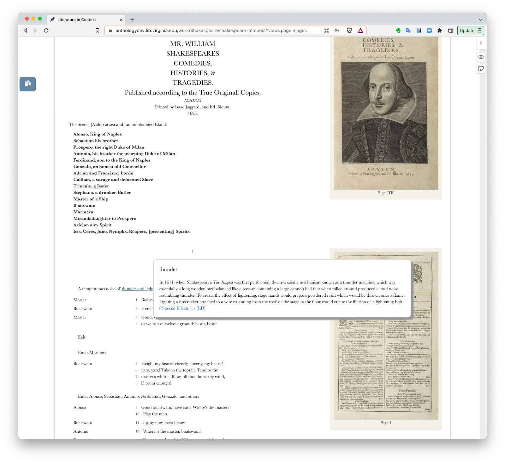

.png)
Teach literature? Need good, free, online texts, in one place?
With over 90 authors represented and 230 texts in our database, Literature in Context is a true open access replacement for costly, proprietary publisher materials that steal students' data and their money.
Why use Literature in Context?
Literature in Context: An Open Anthology of Literature in English, 1400-1925, is made with teachers and students in mind. Born digital, it deploys the interactive and media affordances of the web while not dismissing the work of print. New editions are added every day. And best of all? It's completely and 100% free and open.
Be on the same page
Students often don't buy required materials because of cost, turning to the web for accessible course readings. But as we know, editions can vary wildly in quality and content; students don't often know they're not reading the right version. Get on the same page with your students by assigning free materials from one common collection. Page numbers, line numbers, and citation information are all readily available.
Annotated, reliable reading editions with facsimile page images, citation tools, and provenance notes.

Use linked data to highlight connections between texts, people, and places in the collection

See how the collection texts relate to history with an interactive timeline. The timeline deepens with each added text.

Engage with place and space through mapping features, and learn where these texts are in the world.

Create your own custom anthologies for reading in print, online, or via e-readers like Kindle. Even include excerpts from longer texts.
Responsive. Students can read on a laptop, a tablet, a phone, an e-reader, or in a print copy.
Social. A native Hypothesis layer enables close reading and interactivity. Students collaborate with faculty to add permanent annotations.
Free, open source, and open access. We also make use of already-existing etexts, like those from the Text Creation Partnership.
Encourage interactivity
Social annotation with Hypothesis allows students to keep notes and reply to peer thoughts--and lets you organize lecture notes. Or, collaborate with students to contribute new material to the database: new digital texts, new annotations, even audiobook accompaniment.
Make custom classroom collections
No more worries about your favorite text being expunged from the current edition of your anthology, and no more digging around the web to find your own preferred digital texts. Create a custom anthology with only what you need. Printable, downloadable in multiple formats, and stored online. Add new texts to the database and help our content grow.
Get a sense of the material object
Even though your students are reading online, they can still get a sense of the material object through facsimile page images and media-rich annotations. Most texts in Literature in Context provide page images from the first edition, but some include manuscript images.